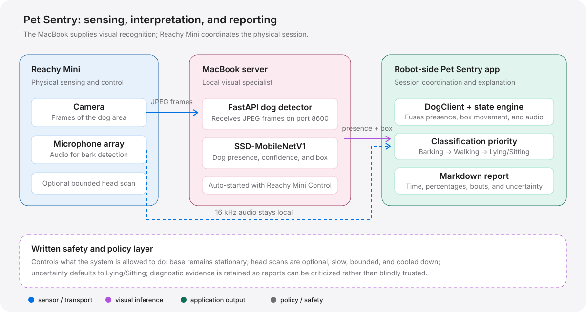

A small robot project became a lesson in perception, distributed intelligence, physical safety, and the discipline of letting real-world failures improve the explanation.
Pet Sentry turns a Reachy Mini robot into a quiet observer for a dog in a cordoned-off area. The robot listens for barking, recognises the dog and tracks walking, and produces a report when the user stops the session. The working design did not come from choosing one perfect model. It came from assigning imperfect components bounded responsibilities, testing them against reality, and treating contradictions as useful evidence.
When the house is empty, the dog stays in a cordoned-off area. The desired system was simple: start it before leaving, allow it to observe without disturbing the dog, and ask afterward what happened.
The report should answer three questions:
The difficulty was not just recording camera images and sound. It was interpreting them. A stationary dog can look like part of the background. A moving robot head can make the entire image appear to move. A short bark can fall between measurements. And a system can produce a precise-looking percentage that is simply wrong.
Pet Sentry is a native Reachy Mini application inside Reachy Mini Control. There is no separate controller to remember. The user connects the robot, starts Pet Sentry, lets it observe, and presses Stop & Report when finished.
Start Pet Sentry in Reachy Mini Control
↓
Observation starts immediately
↓
Camera + microphones + optional head scan
↓
Stop & Report
↓
Timestamped Markdown reportReachy Mini is the physical sensing and control node, but its Wireless model runs on a Raspberry Pi CM4 with limited CPU resources and no GPU. Running the visual recognition model directly inside the robot application made the interface unresponsive and prevented reliable stopping.
The solution was to give each machine the job it is best equipped to perform. The robot captures the physical world and coordinates the session. The MacBook performs the heavier visual calculation. The two communicate over the local network; the camera image is not sent to a cloud AI service.

The MacBook server starts automatically when Reachy Mini Control opens. It receives compressed JPEG frames, runs SSD-MobileNetV1, and returns dog presence, confidence, and an approximate bounding box. The MacBook reduced visual inference from roughly half a second per frame on the Pi to roughly 16 milliseconds per frame.
The MacBook uses object recognition rather than relying only on changes in pixels. This matters because a resting dog may barely change from one frame to the next. Background subtraction alone can absorb that dog into the background and incorrectly conclude that he is absent.
Walking is estimated from the movement of the detected dog's bounding box. The system compares where the dog appears across several observations, accumulates smaller movements, and holds the Walking state briefly so intermittent movement is not lost.
The first version required one very large movement between consecutive detections. A real test contradicted its report: the dog walked continuously, but the report said almost all the time was Lying/Sitting. Investigation found a missing time-function import that caused the walking calculation to fail silently while presence detection continued to work. Correcting that defect made the live Walking result behave properly.
When the dog is present and neither barking nor walking, Pet Sentry reports Lying/Sitting. When visual detection is uncertain, it follows the operating assumption that the user starts the app with the dog in the room and defaults to Lying/Sitting rather than moving the head unnecessarily.
Barking detection stays local to Reachy Mini. Its microphone array supplies 16 kHz stereo audio, which is analysed using short-window energy and an adaptive estimate of the room's normal sound level.
Quiet rooms vary. A fixed low threshold made ordinary ambient sound look like barking, so the detector learns the local baseline.
The SDK can return a short audio block. The detector therefore allows one strong event to count rather than requiring a sequence that may never arrive.
The detector is enabled and has produced strong bark-like audio events in diagnostics. It is not yet a perfect dog-specific acoustic classifier: an empty-room test produced one false bark from a loud non-dog sound. The honest interpretation is therefore “bark-like event detected,” subject to continued calibration.
Reachy Mini can pan its head to search for the dog after he leaves the camera's view. The first design used a 120-degree sweep. Testing revealed two risks: repeated actuation could heat the head motors, and the moving camera could be mistaken for a moving dog.
The safer test configuration reduces the sweep to 60 degrees total, moves at 8 degrees per second, limits each scan to 20 seconds, and waits 30 seconds before allowing another attempt. The scanner also requires sustained absence rather than reacting to one uncertain frame.
60° total sweep 8° per second 20-second maximum scan 30-second cooldown Automatic scanning disabled by default
Normal operation keeps the head still. Head scanning is an explicit, conservative capability. The robot base never moves, and uncertainty is not treated as a reason to search indefinitely.
The natural first idea was to run SSD-MobileNet on the Pi. It made the app unresponsive because the model competed with the same process responsible for the user interface and stop signal. Offloading vision to the MacBook separated the heavy calculation from the time-sensitive robot control loop.
Global pixel motion sometimes detected walking and then lost it. Lighting, changing backgrounds, and camera movement all affected the signal. Tracking the detected dog gave the walking decision a more direct relationship to the subject.
One low-confidence frame should not start a scan. One moving-camera frame should not count as walking. One short audio block should not be required to prove a bark. Sustained absence, accumulated movement, settled-camera checks, and adaptive thresholds made the system less vulnerable to isolated noise.
Pet Sentry now launches from Reachy Mini Control, starts observation immediately, detects the dog through the MacBook server, recognises walking after the box-tracking correction, records rest, supports local bark detection, performs a reduced head scan when explicitly enabled, and writes a report when stopped.
The remaining uncertainties are clearly bounded: dog-specific bark discrimination, long unattended sessions, different lighting and room layouts, occlusion, and generalisation beyond the tested dog and environment.
The deeper result is methodological. The system did not become trustworthy because one model was perfect. It became more trustworthy as each component received a limited responsibility, each boundary became testable, and each contradiction forced a better explanation.
Reliable physical AI is less about finding an oracle than about building a system in which errors become visible, localised, and solvable.